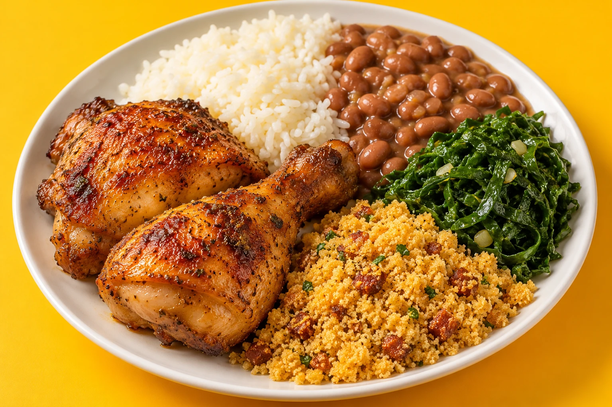
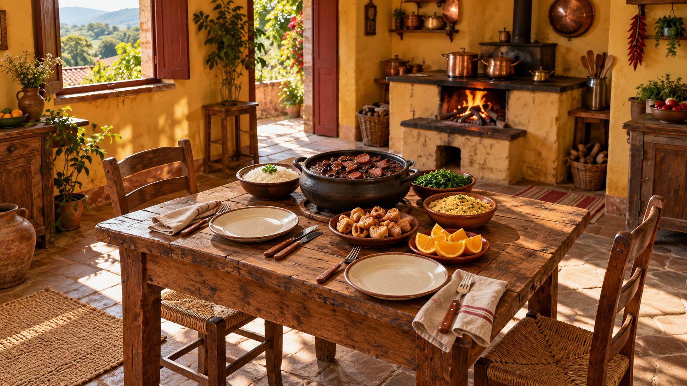

COMIDAMINEIRA.
Comida de casa.
Do nosso jeito mineiro.
Ribeirão das Neves, MG
COMIDA MINEIRA MARMITEX LANCHES PONTO DO SABOR

O convite é sentar à mesa. Cena ilustrativa.
NOSSO JEITO
MINEIRO.
Arroz, feijão e uma boa mistura. Por aqui, a inspiração vem da comida que reúne todo mundo à mesa.
PUXA UMA CADEIRA.
FEIJOADA
NO CAPRICHO.
DÁ ÁGUA NA BOCA.
Dê uma pausa.
O próximo almoço pode começar aqui.
SEU PONTO
É AQUI.
Av. Ida Jubeline, 430Florença · Ribeirão das Neves, MG
CEP 33823-730
Vai passar por aqui ou pedir de casa?
Fale com a gente e combine tudo.